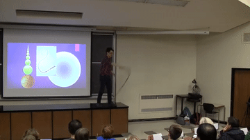
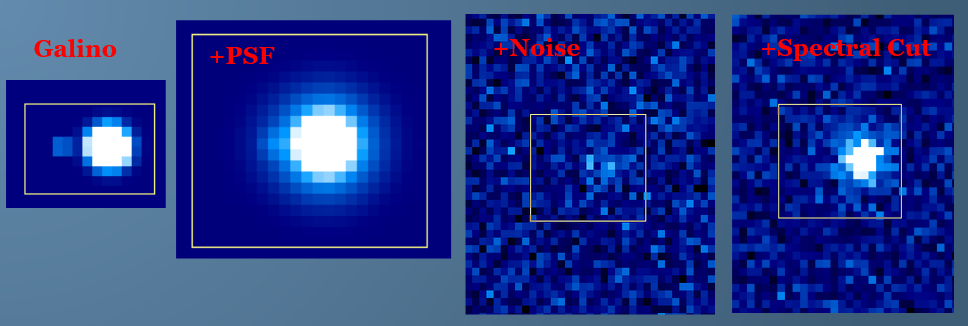
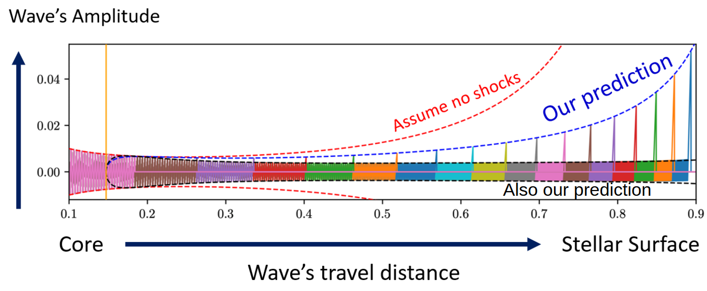

About

Stephen Ro
I got hooked on coding in grade 9. Since then, I have afforded fantastic opportunities to code and collaborate on fun research projects (see below).
I am heading into data science by making projects that I think are fun and useful. My capsone project, OVINO, makes drinking good wine effortless and cheaper by scraping price sentiments. It was competitively selected by The Data Incubator faculty as one of the highest quality and best presentations amongst multiple cohorts. I showcased my project to The Data Incubator’s hiring partners and alumni.
The Journey
Academia
My professional background is in math, physics, and astrophysics. Here are some projects I have worked on with truly amazing people:
- Analyzed1 the optical performance of cryogenic light guides for a dark matter detector2.
- Tested optical shutters3 and measured proton beam alignments4 for a particle accelerator in Japan. It shoots neutrinos under Japan and is aimed at an underground neutrino detector, Super-Kamiokande.
- Simulated galaxies merging with galaxy-groups with FLASH: a FORTRAN(!) hydro code.
- Wrote Galino5: A 3D spectrographic image synthesizer that generates realistic datacubes (X, Y, wavelength) of line emission from distant galaxies. Includes realistic statistical properties from telescopes, instruments, and radiation physics.
- Solved for a lot of eigenvalue-solutions describing self-similar shocks sweeping through an atmosphere6.
- Solved7 the structures of stars with extremely dense winds. I did this to simulate how a supernova explosion could look differently.
- My favourite: A mantis shrimp video inspired me to adapt the physics of sonoluminescence8 to describe shockwaves in stars9.
- Simulated how failed supernovae with a central black hole can still explode10.
{kind=link}
Education
BScH in Mathematical Physics | Queen’s University
PhD in Astrophysics | University of Toronto
Postdoc | Theoretical Astrophysics Center | UC Berkeley
Papers
Teaching and Outreach
I love to teach! This passion was lit in graduate school. Since then, I designed an undergraduate python course how I wished science and coding were taught to me. I then trained to become a highschool math and physics teacher in Ontario, Canada. This was an immensely rewarding path that I enjoyed thoroughly and miss. The decision to place my teaching path on hold[^11] was quite an emotional and challenging one. But, my passion to teach continues and will appear in all my presentations and talks to come.
Footnotes
using lasers and exorbitant amounts of liquid nitrogen↩︎
A cryogenic acrylic chamber housing 3600 kg liquid argon in a mine 2 km underground. The earth is really warm down there! DEAP3600.↩︎
These are display screens like those on your school calculator (i.e., twisted nematic screens). The screens are semi-transparent and block light when triggered to display numbers or ‘close’ a shutter. We used these as remotely operated digital shutters for a camera in an irradiated area. Schematic↩︎
and convincing researchers to not over-interpret the shoulders of gaussian fits to 5 data points.↩︎
Distant galaxies are seen at earlier times during the “galactic bombardment phase” when galaxies are being smashed and cannibalizing smaller galaxies. It is a messy phase and a telescopic image will show a bunch of pixelated blobs. Hence, “Galino” = “little galaxy … blobs”. ↩︎
A close analogy is a wave traveling down a whip and studying how it “cracks”. Except, the wave is replaced with a shockwave and the whip is replaced with an atmosphere.↩︎
Wrote a relaxation algorithm to solve non-linear equations describing a star with a windy surface. Proudly integrated unwieldly FORTRAN code (OPAL) to include realistic opacity calculations.↩︎
Sonoluminescence. Sono = sound; luminescence = light. If you blast two ultrasonic soundwaves at each other underwater, the constuctive interference can become non-linear and rip open a cavity. The underwater cavity is like a hole with no pressure support (i.e., it’s not a bubble) and so it implodes. The implosion of a spherical wall of water meeting at a singularity generates light with spectral characteristics indicating peak emission temperatures of 5,000 to 150,000 K. The sun’s surface is about 6,000 K…↩︎
I got goosebumps from seeing my exploding star simulation be predicted perfectly by solutions for underwater implosions, a seemingly unrelated problem. ↩︎
Imagine if the earth’s mass suddenly decreased by 10%. You’d immediately feel lighter because gravity has suddenly decreased. This happens in a massive star (maybe 0.5% of mass rather than 10%) moments before it goes supernova. The sudden drop in gravity causes the outer envelope of gas to expand non-uniformly and non-linearly to form a shockwave that might breakout to the surface of the star. You’d never see this smaller shockwave because it’d be overrun by the bigger supernova shockwave coming from the core! This scenario was thought about because astronomers found a red supergiant to have disappeared without any explosion of light… indicating supernova can fail…?! (Also, the mass vanishes suddenly because most of the supernova’s energy is lost in the form of neutrinos. These neutrinos don’t interact with anything and can zoom out of the star at the speed of light unimpeded.)↩︎